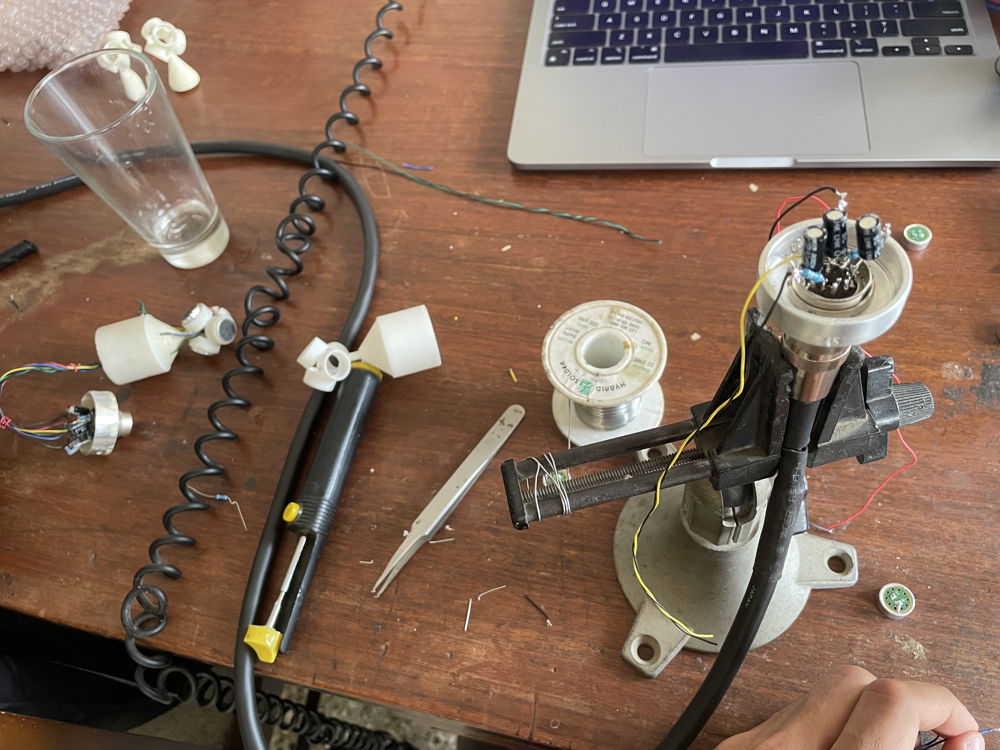
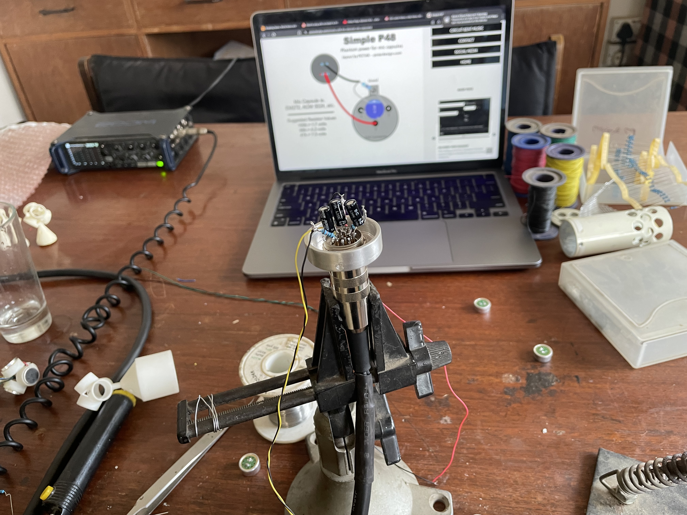
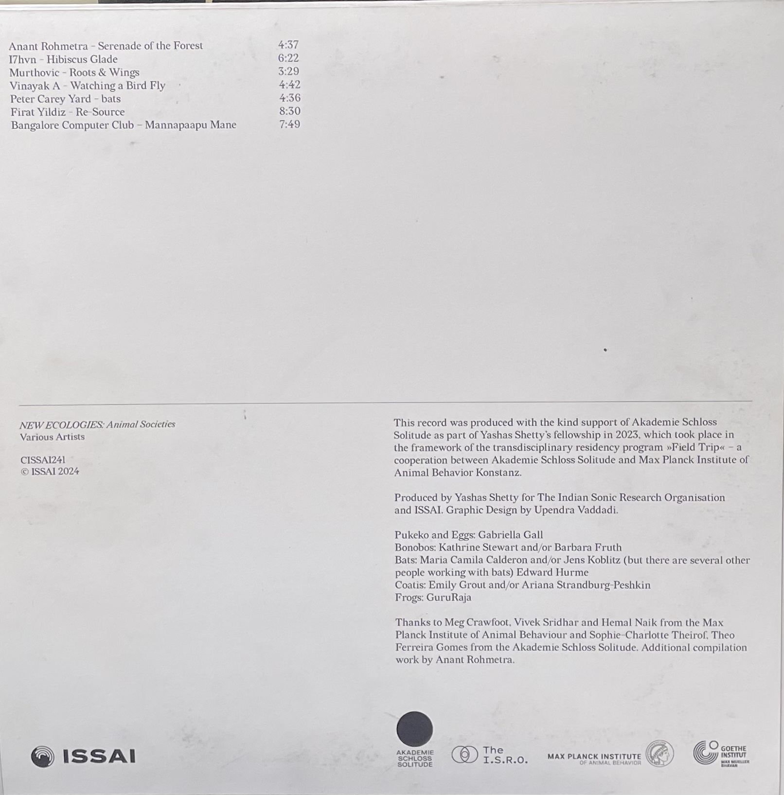
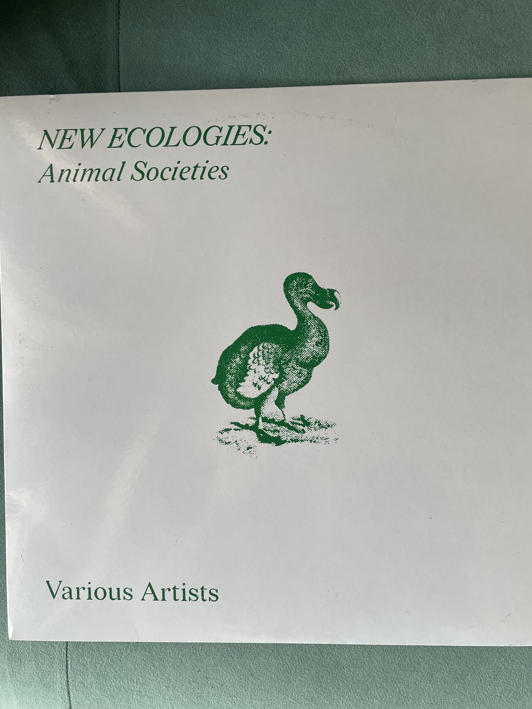

Leap Motion tracks hand and finger movements in 3D space using infrared cameras and LEDs. It is used to make a non-contact instrument that reads hands’ tilt, distance, X–Y position, and grab strength and generates data accordingly which changes timbre, pitch and trigger sounds.
The project started as an exploration of non-contact instruments and to study how various users interact with them. The player can alter sound by interacting with two time-of-flight sensors that read the distance of both hands.
Markov chains generates ratios for an FM synth with 6 oscillators affecting the timbre and the visuals. The visuals leverages lights in order to give. 3d like feel.


The Indian Sonic Research Organisation builds 1st-order and 2nd-order Ambisonic microphones called Brahma. I have been involved in both the building and use of these microphones — assembling arrays, calibrating against reference microphones, and conducting field recording trips to lakes across Bangalore for archival and ecological study.
A standalone device which acts as a sound-operator, manipulator and sound reproduction with a specialised body interface. An ultrasonic sensor controls pitch whereas a flex sensor introduces pitch modulation through chance operation when bent.


New Ecology is an Indo-German collaborative exploration blending field recordings of animals and birds from scientists at the Max Planck Institute of Animal Behaviour in Germany with music from producers and DJs from India and Germany.
A Pure Data implementation of Jon Dattorro's plate reverb algorithm, built as part of an exploration into how digital reverberation creates a perceived sense of acoustic space.